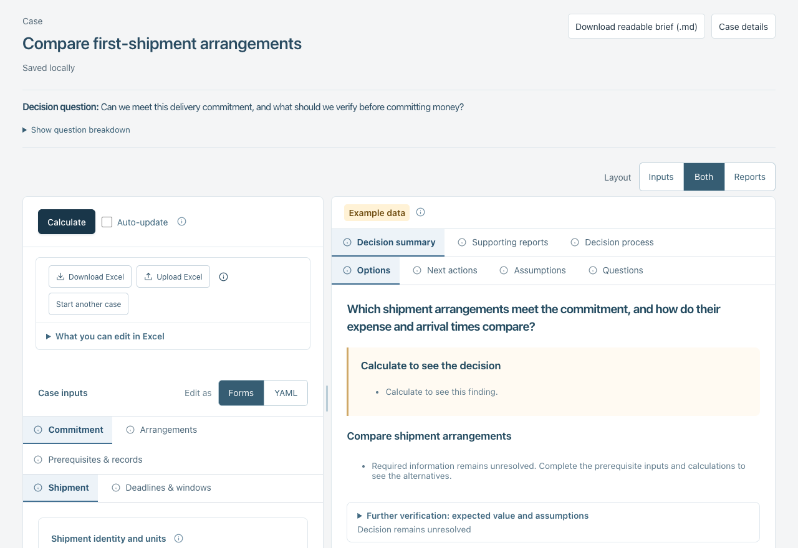
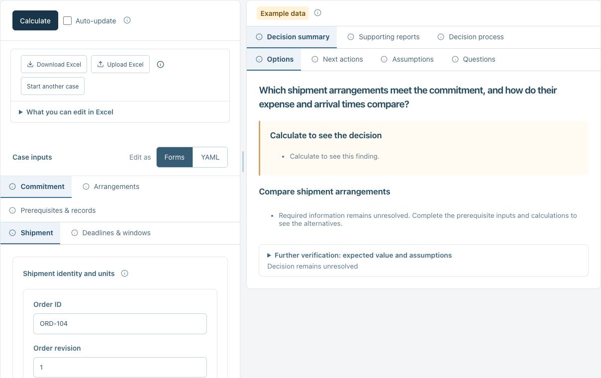
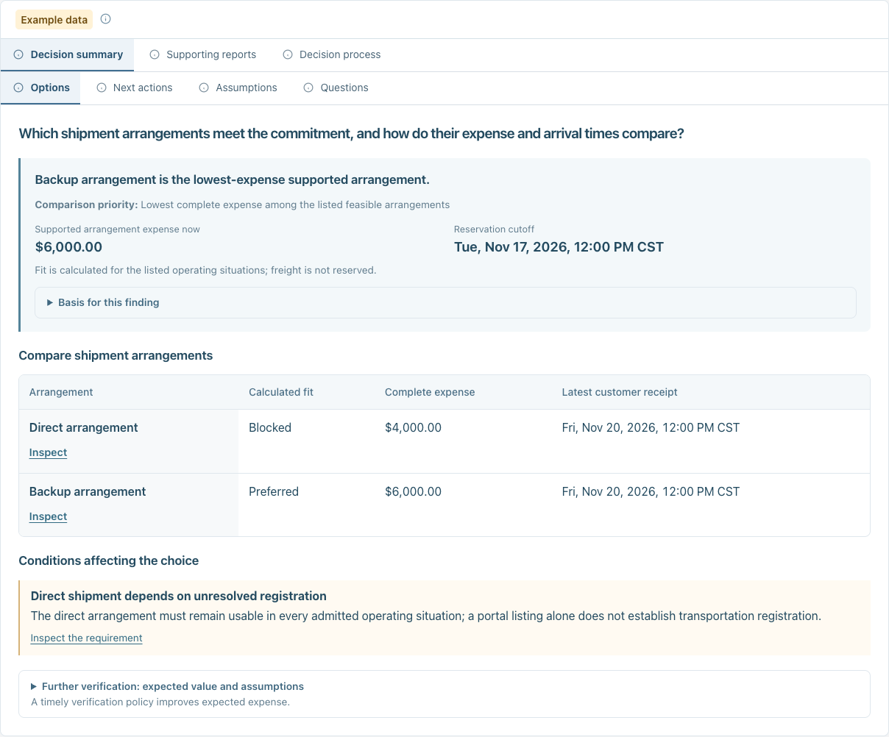
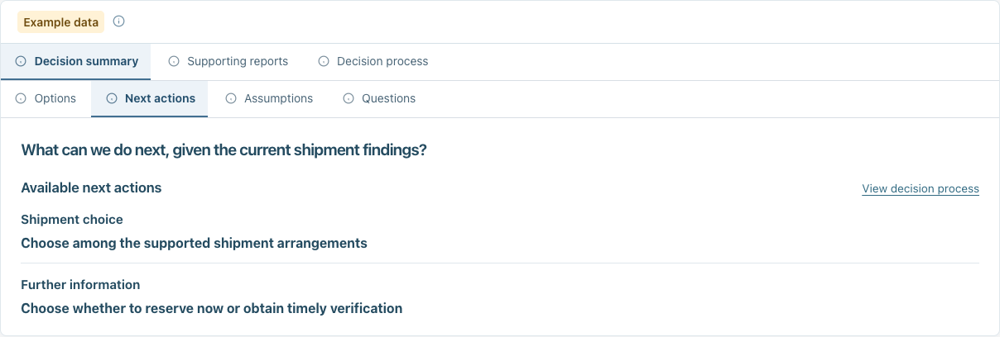
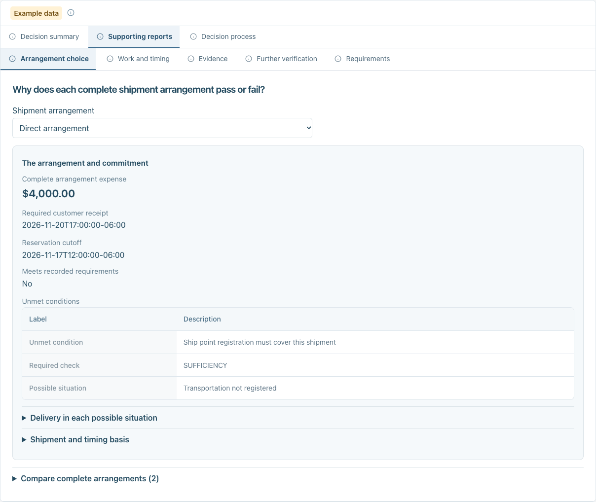
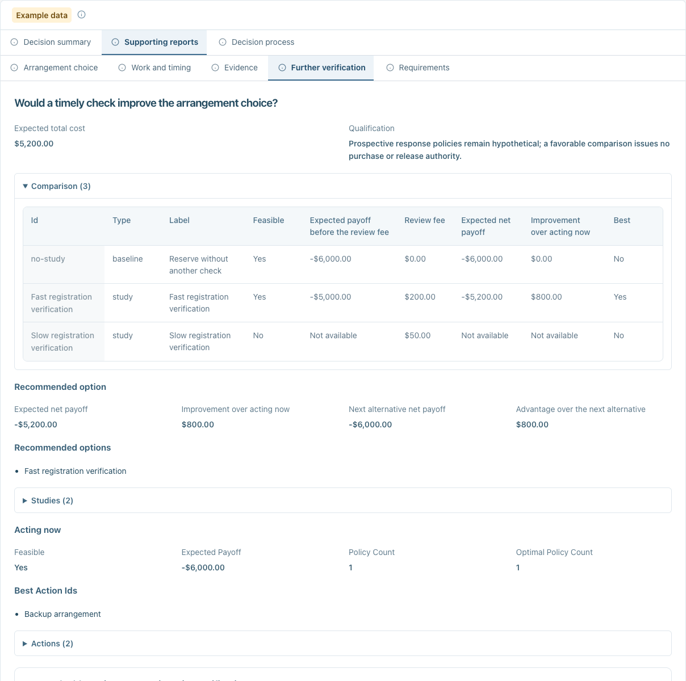
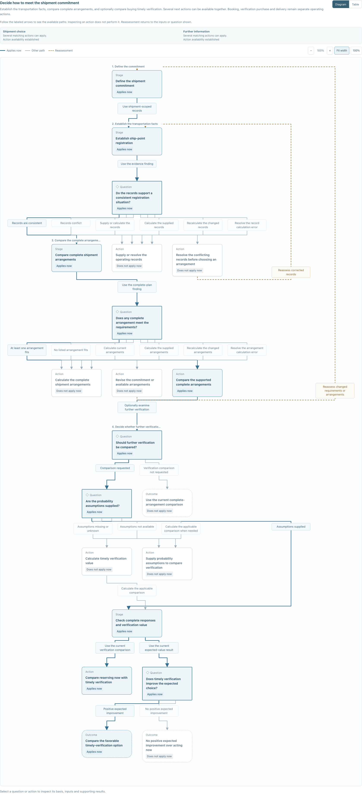
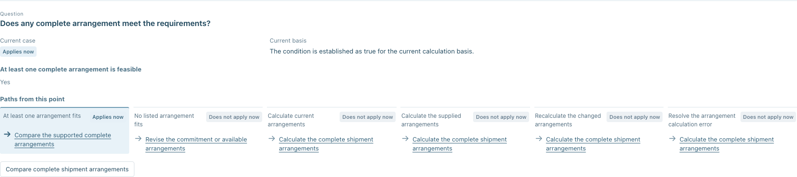
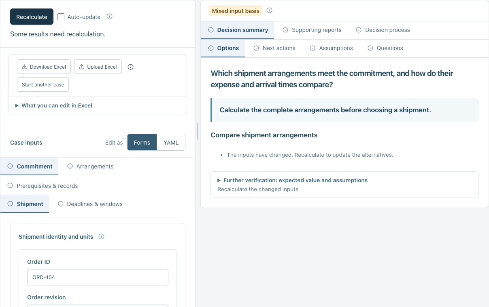
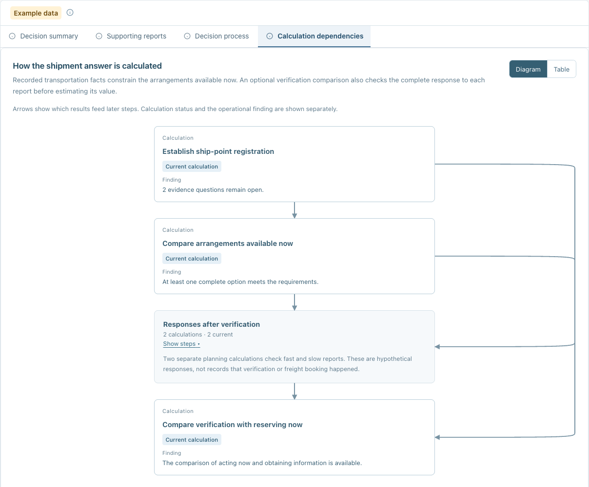

Requirements reference: Walmart’s checklist, p. 11 (collect suppliers). Business context: 8th & Walton (Terry Clear, June 4, 2025). This walkthrough uses a source-informed fictional example. Sources and demonstration scope.
The shipment lead has a noon reservation cutoff, a cheaper route with uncertain transportation registration and a customer promise to protect. Supply the available records, calculate which complete arrangements meet the requirements and inspect whether a timely check would improve the choice.
The workflow brings together reusable solutions to recurring problems: interpret evidence while keeping uncertainty visible, compare complete shipment plans with their recorded arrangements, and assess whether verification would help before commitment. The app author has connected these approaches for this review. You supply this shipment’s facts and review the resulting findings. See Pattern Languages for Human Decisions for the broader idea.
A shipment plan describes the intended route, dates and cost. An arrangement connects the work, people, resources, permissions and dependencies needed to carry it out over time. The arrangement changes as the situation develops; this app evaluates the version you have recorded. Update inputs and recalculate affected findings when conditions or evidence change. See The Arrangement Problem in Human Decisions for the broader concept.
The walkthrough uses Compare first-shipment arrangements 1.8.0. Keep the business process chart available as a reference for the operating work surrounding the calculation.
The connected assessments answer different questions: what the registration records support, which complete shipment responses satisfy the requirements, and whether timely verification improves the modeled outcome. Their findings retain the supplied scope and the hypothetical numerical assumptions below.
Supply the inputs. Calculate the decision support.
Open the supplied first-shipment example in Decision Lab. The link installs the Order fulfillment workflow and opens Compare first-shipment arrangements 1.8.0 with fictional example data. The decision question stays above the workspace; Show question breakdown reveals the questions organized under it. Check the pinned definition in Case details before entering the shipment’s records.


The case starts with fictional supplied inputs. Replace the examples with the shipment’s actual records before relying on a finding. Supplying a record does not authenticate its source or create operating authority.
Calculate sits at the top of Inputs, beside optional Auto-update. Use Both to keep inputs beside reports. Input groups and report groups navigate independently; Forms exposes the authored fields, while YAML exposes the complete shared case. Download Excel and Upload Excel provide a spreadsheet alternative; What you can edit in Excel explains its scope.


Read the supported arrangements first.
Choose Calculate. Decision Lab runs the relevant supporting apps in dependency order: interpret the transportation records, check complete arrangements, check responses after verification and compare timely verification with reserving now. Complete current results feed later calculations without individual finding signoff. Missing information and incomplete results remain visible.
Calculation opens Reports → Decision summary → Options: the supported answer, its cost-first comparison priority, a compact Compare shipment arrangements table and the conditions affecting the choice. Backup at $6,000 meets the recorded requirements across both possible registration states. Direct at $4,000 costs less, but its transportation-registration condition is not established in one remaining state. A portal listing alone does not settle that question.


The summary separates Options, Next actions, Assumptions and Questions. Read Options for the comparison; use Next actions for the available response, and the other sections for the premises and unresolved questions that limit it. These are views of the same calculation.


Choose Inspect beside Direct to open its exact arrangement in Supporting reports. The summary keeps the decision readable; the supporting view exposes the registration condition, work and timing behind it. Inspecting an arrangement changes neither the inputs nor the business decision.


Would checking first improve the choice?
In Supporting reports → Further verification, open Comparison to compare the supplied offers. With hypothetical 50/50 registration probabilities and perfectly accurate verification, the $200 fast check gives a $5,200 expected total cost, including its fee, with time to respond by 10:30 a.m. The $50 slow check reports at 2 p.m., after the noon reservation cutoff. The probabilities and accuracy assumptions are supplied premises, not conclusions inferred from the portal listing.


The shipment lead can put forward the timely check or an immediately supported arrangement. Responsible owners still decide, authorize purchases, reserve freight and carry out delivery. A current supported finding covers the declared calculation and inputs; it establishes no completed booking or shipment.
Where could a numerical basis for that comparison come from? In a separate fictional Python example, connect a Python machine learning model to Decision Lab. Follow the estimator’s output into the Python SDK’s planning and learning assessments, then back into an application report. The shipment’s requirements, check fee and response time supply the decision context. This tutorial retains its supplied 50/50 and perfect-verification assumptions.
Follow the questions before inspecting the calculation chain.
Open Decision process to follow the labeled arrows from registration evidence to complete shipment arrangements and the verification question. Highlighted paths apply to the recorded case; other paths remain visible so the lead can see how a different finding would change the available response. Dashed paths return to an input or question for reassessment.


Use Fit width for the overview, or zoom in to follow a branch. Diagram / Table presents the same process in either representation. Select a question or action to inspect its current basis and linked supporting results. Opening an action does not authorize or carry it out.
Inspect the basis behind a process point
The selected point retains the current finding, its basis and the paths that follow. This lets the shipment lead trace the proposed next step back to the recorded case before committing money.


Keep a changed input separate from an updated finding.
A form edit is initially a draft. Choose Apply inputs to record it, then Recalculate for the affected dependency chain. Pending edits prevent calculation; applied changes make dependent earlier results outdated. The summary marks the dependent findings stale and withholds the earlier comparison until it is recalculated. The demonstration below changes quantity from 100 to 101 solely to expose that boundary, then restores 100 before recalculating the original case.


Auto-update, when enabled, runs that recalculation after inputs are applied. It does not apply an unfinished form for you. Preview changes → Apply case changes performs the equivalent save for YAML. Changing a report tab cannot make an old finding current.
Choose Inspect calculation dependencies below the process graph, or in Case details → Calculation history, to see the result handoffs between the supporting apps. It answers how one calculation supplies another; Decision process answers how the business questions and responses connect. Inspect a calculation when its retained assessment is needed, then return to the dependencies. Case details → Files → Export complete case (.json) preserves the recorded inputs, calculations and saved presentation settings. The same Files panel offers a readable brief and an advanced native SDK-run export.


All screenshots in this walkthrough come from the current public app and its 1.8.0 Marketplace workflow. The native capture receipt identifies the exact public runtime, package, calculated results and changed-input exports. It also checks that inspection preserves the case and findings.
Test the review against your work.
Use the calculation example to identify where the existing template helps and where the business problem exceeds it. In particular, the current verification comparison needs at least one immediately feasible shipment plan. If every plan is blocked, inspect the blockers and revise the recorded alternatives or commitment; the workflow does not construct a remediation or escalation plan for you.
- Can you explain the difference between a portal listing and the registration claim this decision needs?
- Can you identify the exact failed requirement, rather than just the cheaper quote?
- Can you distinguish a possible state, a probability assumption, and a verified operating record?
- If you apply a changed quote or record, can you see which findings need recalculation?
- Can the team name the next real action, its owner, and the evidence needed to close it?
Share the point where the review stops matching your work through the contact form below. That feedback will guide which readiness conditions and recovery activities the next template should represent.